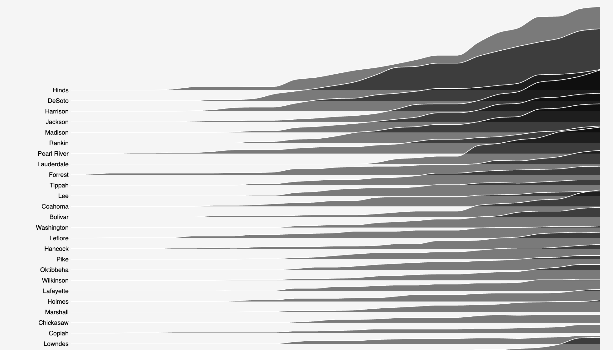
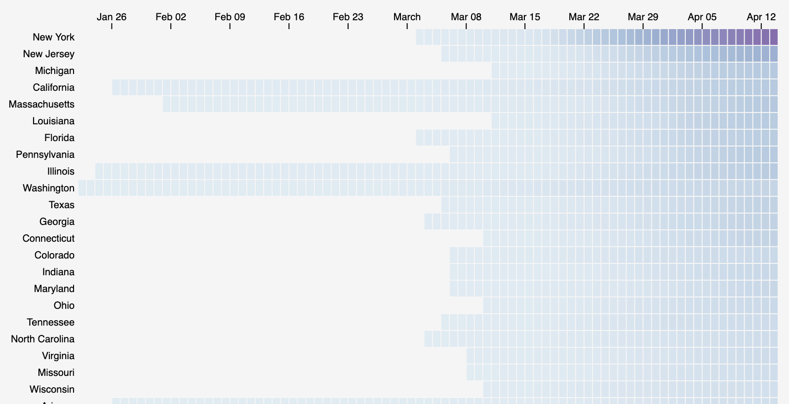

COVID-19 Visualizations
Created by
Chad A. Steed
in collaboration with Erik Schmidt
VISTA Laboratory
|
Computer Science and Mathematics Division
,
Oak Ridge National Laboratory


©
Oak Ridge National Laboratory